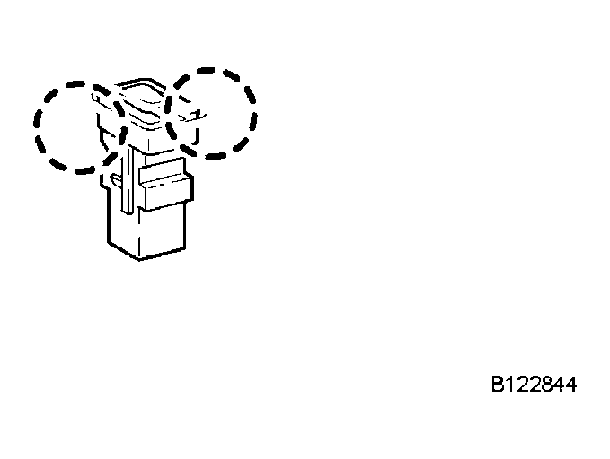

Home
>>
Scion
>>
2006
>>
xB Standard
>>
Repair and Diagnosis
>>
Accessories & Equipment
>>
Gauges & Instrument Panels
>>
Instrument Panel
>>
Rear Console Box
>>
Reassembly
Rear Console Box: Reassembly
INSTALL STEREO JACK ADAPTER ASSEMBLY
Connect the connectors.
Attach the 2 claws to install the stereo jack adapter.
Fig 1: Attaching Claws To Install Stereo Jack Adapter

Courtesy of © TOYOTA, LICENSE AGREEMENT TMS1002